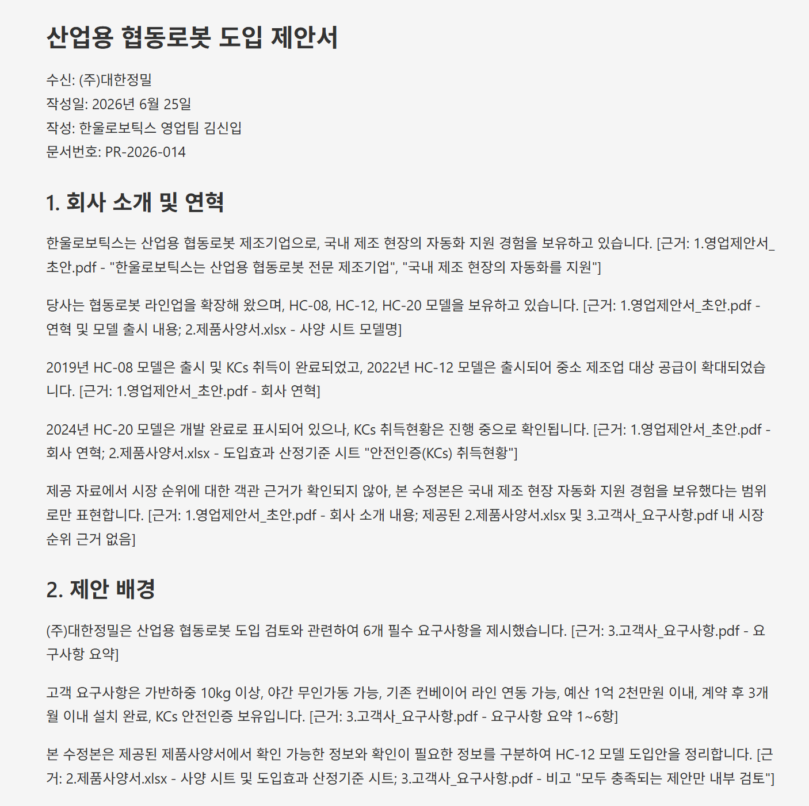

// 실습 6 · 제안서 내용 검증하기
3 · 사실로 재작성¶
2단계를 거치니 그럴듯해 보이던 제안서 한 장에 사양 오류·계산 과장·요구 누락이 줄줄이 숨어 있었습니다. 찾았으면 고쳐야 하는데, 문제 목록 없이 "알아서 좋게 고쳐줘"라고 하면 또 다른 과장이 들어갑니다.
그래서 세 관점의 문제를 1단계 체크리스트와 하나하나 대조해 종합한 뒤, 사실에 기반한 제안서를 다시 씁니다. 숫자는 사양서 값에 정확히 맞추어 기입하고, 근거 없는 빈칸은 지어내지 않고 '확인 필요'로 남깁니다.
직접 시켜보세요¶
2단계 결과와 1단계 체크리스트를 함께 주고 종합 정리 후 수정까지 시킵니다.
프롬프트에 꼭 담을 것 ✅¶
- 종합 대조 — 2단계 세 관점의 문제를 1단계 체크리스트 항목과 맞춰 정리
- 사실로 교체 — 틀린 값은 사양서 값으로, 과장 표현은 근거 있는 문장으로
- 누락 보완 — 빠진 요구사항을 사양서 근거로 채우기 (근거 없으면 지어내지 말고 표시)
- 문장마다 근거 — 고친 수치·주장에 어디서 나왔는지 근거 달기
이런 건 빼세요 ❌¶
- 문제 목록 없이 "알아서 좋게 고쳐줘" (또 과장이 들어갑니다)
- 자료에 없는 값으로 빈칸 메우기 (없으면 "확인 필요"로 남기기)
- 맞는 문장까지 불필요하게 바꾸기
예시 프롬프트¶
여러분 문장을 먼저 보낸 뒤에 열어보세요.
이렇게 시킬 수 있습니다
1단계 체크리스트와 2단계에서 찾은 세 관점의 문제점을 하나하나 대조해서 종합 정리해줘.
그다음, 그 문제들을 반영해 제안서를 사실에 맞춰 다시 써줘.
- 사양서와 안 맞는 값은 사양서 값으로 바꿔줘.
- 근거 없는 최상급·법적 위험 표현은 근거 있는 표현으로 교체해줘.
- 빠진 요구사항은 사양서 근거로 채우되, 자료에 근거가 없으면 지어내지 말고 '확인 필요'로 표시해줘.
고친 문장마다 어느 파일 근거인지 붙여주고, 결과는 lab6 폴더에 제안서_수정본.md로 저장해줘.실행 예시¶
이렇게 나오면 됩니다

체크포인트¶
- 세 관점 문제가 체크리스트 항목과 표로 정리됐다
- 틀린 값이 사양서 값으로 바뀌었다
- 과장·법적 위험 표현이 근거 있는 문장으로 교체됐다
- 근거 없는 항목은 지어내지 않고 '확인 필요'로 남았다